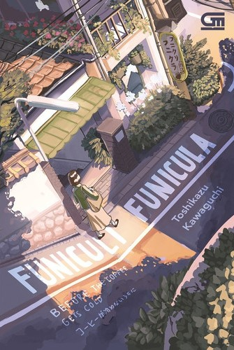
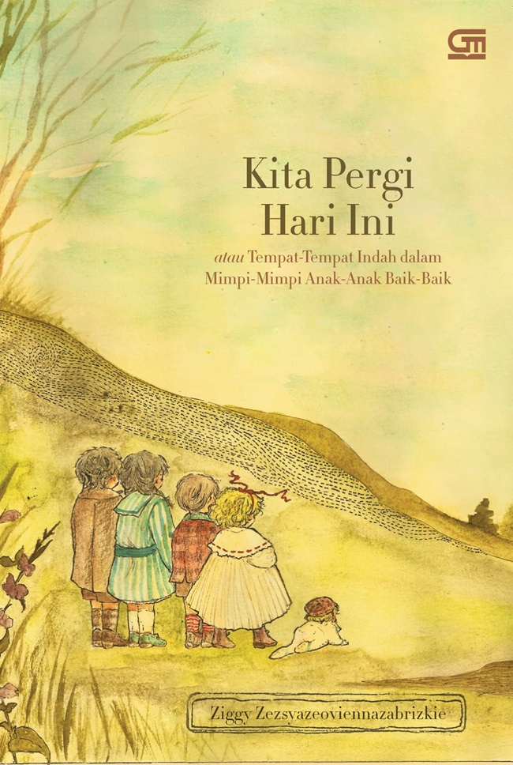

| Home | Best Seller |
|  | Judul : Funiculi Funicula (Before the Coffe Gets Cold) Penulis : Toshikazu Kawaguchi Tahun Terbit : April 2021 Jumlah Halaman : 224 halaman Penerbit : Gramedia Pustaka Utama Harga : Rp70.000 |
 |
Judul : Of Chronicles Of Narnia(The Lion, The Witch, And The Wardrobe) Penulis : C. S. Lewis Tahun : Juni 2022 Jumlah Halaman : 232 halaman Penerbit : Gramedia Pustaka Utama Harga : Rp65.000 |
|  | Judul : Kita Pergi Hari Ini Penulis : Ziggy Zezsyazeoviennazabrizkie Tahun Terbit : Oktober 2021 Jumlah Halaman : 192 halaman Penerbit : Gramedia Pustaka Utama Harga : Rp88.000 |
 |
Judul Buku : Bibi Gill Penulis : Tere Liye Tanggal Terbit : 4 Maret 2022 Jumlah Halaman : 356 halaman Penerbit : Gramedia Pustaka Utama Harga : Rp95.000 |
| <= Mysteri & Thriller | Science Fiction => |